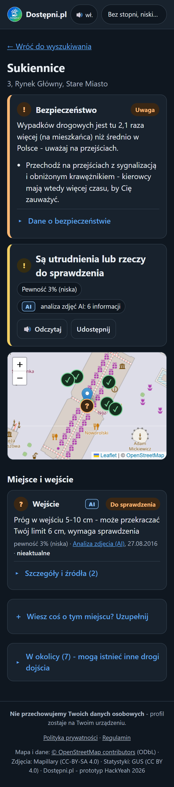
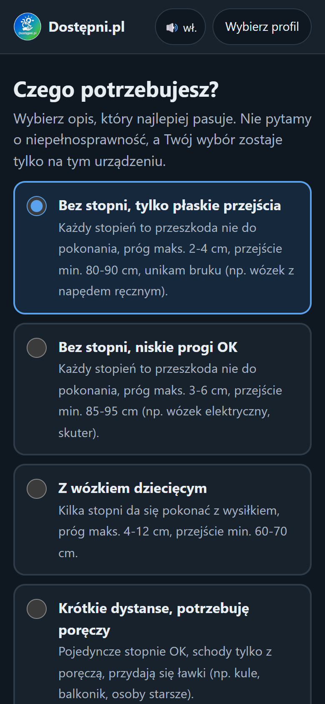
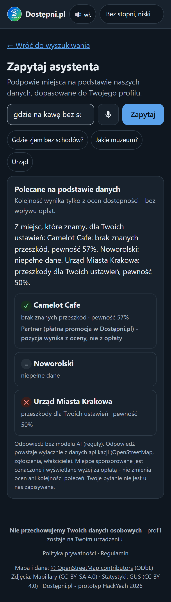
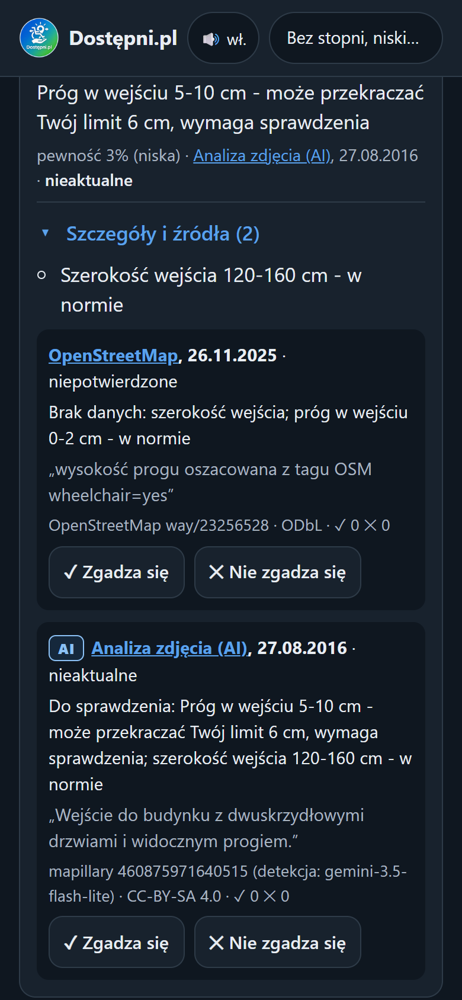

Dostępność miejsc w Krakowie dopasowana do Twoich potrzeb.
HackYeah 2026 · wyzwanie „Kraków bez barier”

Próg 8 cm: dla wózka - przeszkoda, dla wózka dziecięcego - tylko utrudnienie.
Nie wiadomo, skąd są i czy aktualne.
A tak bywa pokazywany.
Tysięcy obiektów nie da się aktualizować ręcznie.

Wybierz potrzeby
tylko preferencje
Wyszukaj miejsce
tekstem lub głosem
Zobacz ocenę
bariery, źródła, pewność

Albo zapytaj
zadaj pytanie
| Przeszkoda | nie dasz rady |
| Utrudnienie | da się, z wysiłkiem |
| Do sprawdzenia | dane niepewne |
| Brak danych | nigdy jako „dostępne” |
| W normie | mieści się w Twoich limitach |
Schody obok budynku nie blokują wejścia.
Słaba przesłanka nie ogłosi „nie do pokonania”.
Wypadki drogowe z danych GUS.
Sprzeczne dane: OSM „próg 0-2 cm”, zdjęcie „5-10 cm” → do sprawdzenia
Źródło nie działa: zapasowe serwery, „dane się wczytują”
Poprawki: „zgadza się / nie zgadza się”, zgłoszenia, właściciele
Stare dane tracą wagę z czasem

| Źródło | Co daje | Licencja |
|---|---|---|
| OpenStreetMap | wejścia, schody, rampy, windy, toalety | ODbL |
| Mapillary + AI | progi i drzwi rozpoznane ze zdjęć ulic | CC-BY-SA 4.0 |
| GUS | bezpieczeństwo: wypadki drogowe | CC BY 4.0 |
| Właściciele | potwierdzone pomiary | - |
| Użytkownicy | potwierdzenia i poprawki | - |
Dane pobierają się same przy pierwszym wyświetleniu miejsca.
OSM, zdjęcia, GUS, ludzie
wspólny format
wagi, głosy, wiek
werdykt dla profilu
web, mobile, partnerzy
ustawienia, by dodać nowe miasto
obraz Docker - dowolny serwer
testów automatycznych
Ocena dostępności nie jest na sprzedaż.
| Lokale, hotele | jawnie oznaczona promocja działa |
| Lokale, hotele | abonament „Partner” z naklejką QR |
| Firmy | audyty dostępności (Akt o Dostępności) |
| Miasta | raporty: gdzie najpierw usuwać bariery |
| Booking, mapy | płatne API i widżet |
Zespół prowadzi hosting poza UMK.
Koszt: kilkadziesiąt zł / mies.
Start z grantów, potem partnerzy i miasta.
Więcej danych o dostępności miejsc.
Testy z użytkownikami i audyt WCAG.
Nawigacja między miejscami.
Bez zmian w kodzie.